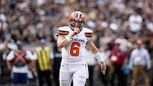
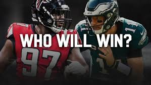
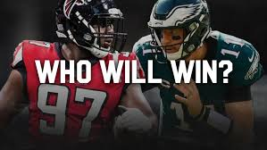
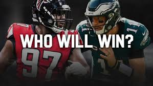

Welcome to Kids Football League
The Ultimate Fantasy Football Site For Kids
Saints ink Payton to a 5 year extension
Big Ben questionable; Rudolpf in at QB
Adrian Peterson passes brown on rushing TD list
QB Rankings 1-32 Dak, Lamar surge
Brees traveling back to L.A. to have hand surgery
Notable Injuries from Sunday's Week 2 NFL games
Jets rule out Mosley for 'MNF'; Bell questionable
Redskins placing Guice (knee) on IR
Bucs LB Devin White day-to-day with MCL sprain
Hopkins: Jalen Ramsey is 'my favorite' CB to face
Battle of young QB's, Ravens vs Cards
">
Early WAIVER WIRE targets for Week 3 | Full Episode | Fantasy Football Today

 
